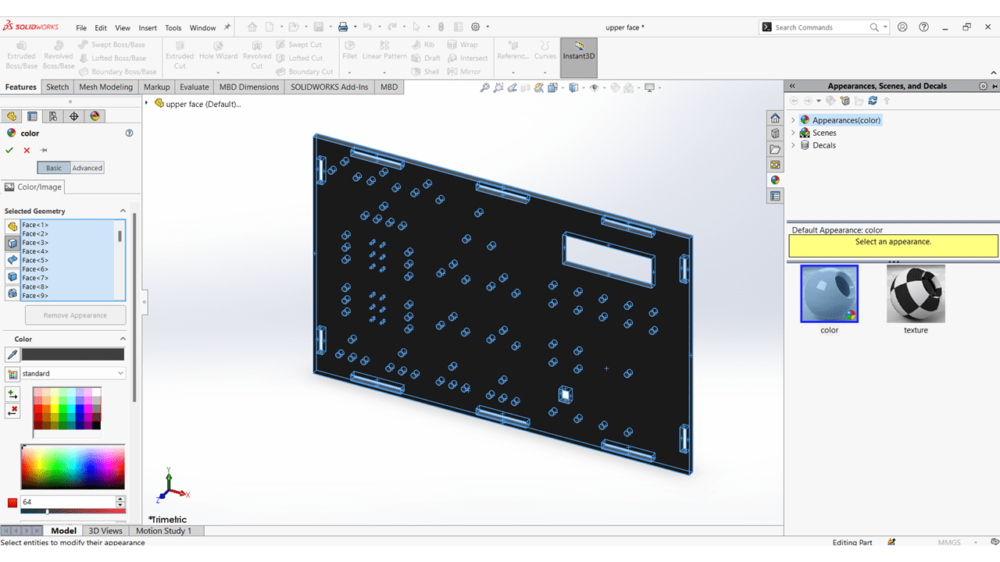
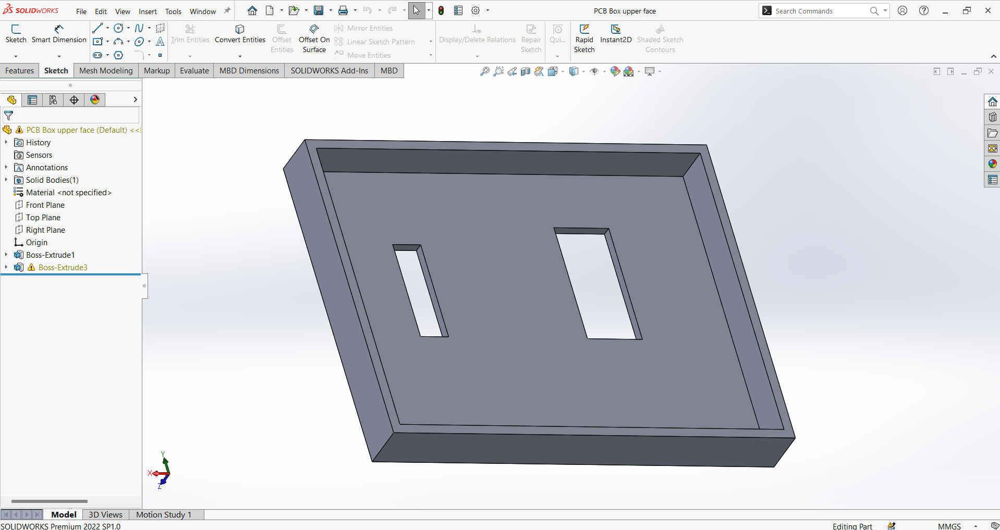
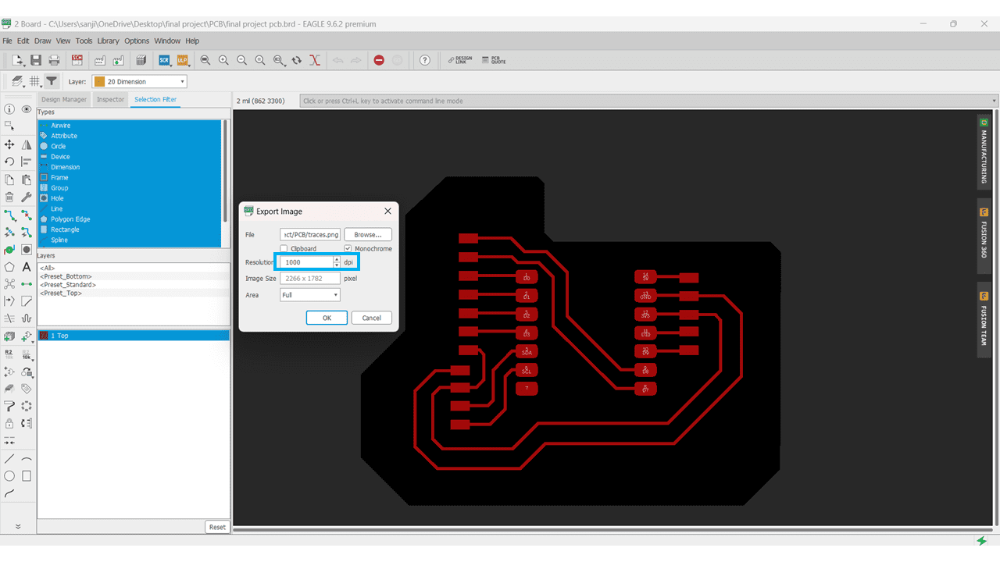
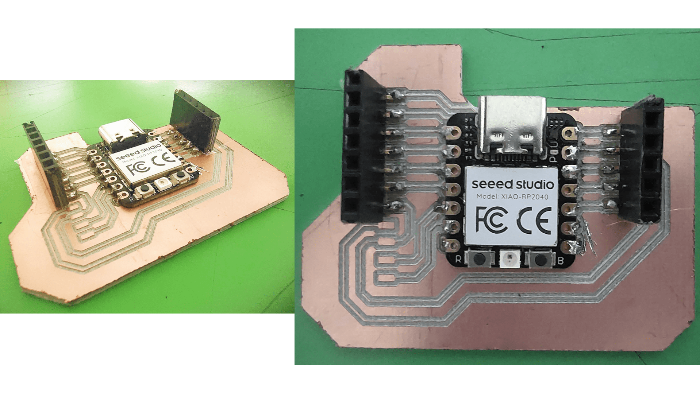
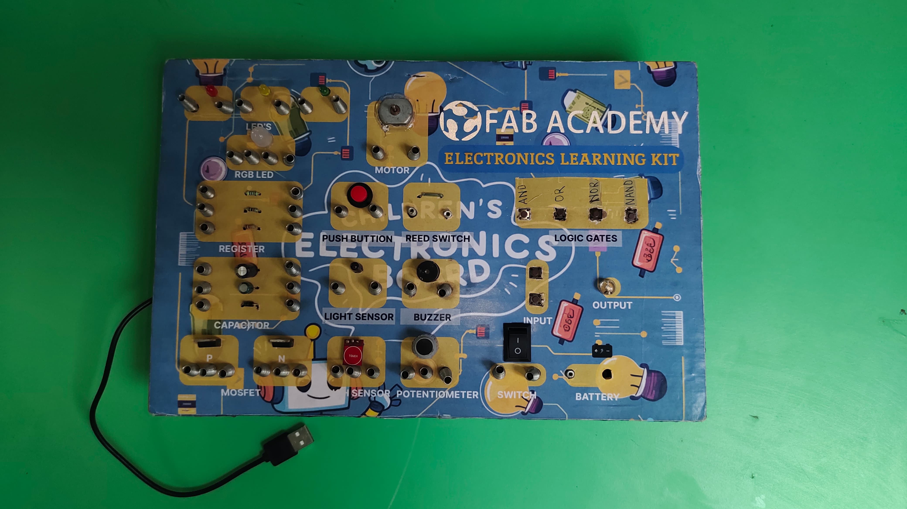

Electronics Learning Kit
A highly accessible STEM education platform crafted for rural student learning. The modular kit utilizes an RP2040 chip and custom PCBs wrapped in a 3D-printed enclosure, teaching fundamental electronics and logic via magnet-snap interactions.

Process_Flow
01_Mechanical Design
The objective was to iterate on existing government-provided school kits to create something significantly cheaper, modular, and more robust. Using SolidWorks, the primary casing was designed with tolerances for 3D printed internal mounts and a smooth external finish using 5mm laser-cut constraints for structural integrity.

SolidWorks CAD Assembly

Internal PCB 3D Frame
02_PCB & Embedded Electronics
The board logic is driven by the seeed studio Xiao RP2040. Autodesk Eagle was used for tracing logic components (buttons, LEDs, RGB, Buzzer) ensuring a 16 mil trace width for reliable milling via MIT Mods. Component mapping accounts for direct student interaction via rugged spring-style connectors.
Milling Constraints
- Tip/Tool Diameter: 0.1mm - 0.15mm
- Trace Cut Depth: 0.1016mm
- Outline Cut Depth: 1.8mm
- Number of Passes: 3

03_Firmware Logic Gate Simulation
A core educational focus of this kit is teaching logic gates. The RP2040 uses hardware interrupts and simple pull-down states across standard pushbuttons to simulate AND, OR, NAND, and NOR gates physically via main LED outputs.
switch(mode) {
case(1): // AND Gate
digitalWrite(led, (input1_state && input2_state));
break;
case(2): // OR Gate
digitalWrite(led, (input1_state || input2_state));
break;
case(3): // NAND Gate
digitalWrite(led, !(input1_state && input2_state));
break;
case(4): // NOR Gate
digitalWrite(led, !(input1_state || input2_state));
break;
}04_Final Production & Assembly
The manufacturing process combines FDM 3D printing for internal mounts, CO2 laser cutting for the rugged external housing, and vinyl cutting for the protective front sticker logic overlays. This enables extremely cheap mass production capabilities for rural delivery.

